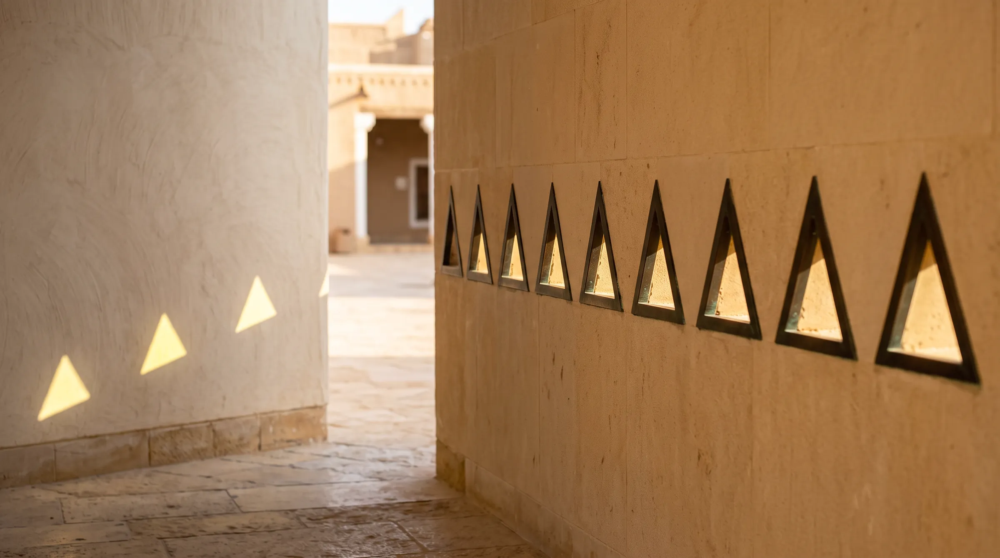

اسأل الناس عمّا يقدّرونه في مكان يستخدمونه كل يوم، ونادراً ما يصفون السقف. يتحدثون عن ثقل مقبض الباب، ودفء المكتب الخشبي، والحجر الذي يبقى بارداً تحت راحة اليد. التشطيبات القريبة من اليد تصنع ذاكرة المكان أكثر بكثير من تلك التي نتأملها من بعيد.
01الأسطح التي نتذكرها
الصور تحكم على المكان بالنظر، أما الحياة اليومية فتحكم عليه باللمس. أسطح العمل والمقابض والدرابزين وحواف المقاعد والمتر الأول من كل جدار تُلمس مئات المرات أسبوعياً، وتحمل حصة كبيرة من تجربة المكان.
وهي أيضاً الأسطح التي يكون فيها خفض التكلفة أكثر إغراءً وأكثر وضوحاً. قد يظهر اللامينيت في الصورة كخشب البلوط ويبقى ملمسه بلاستيكياً، وقد يبدو الطلاء المعدني كالبرونز على لوحة المواد ويبقى بارداً وأجوف عند اللمس. نادراً ما يسمّي الناس هذا الفرق، لكنهم يشعرون به في كل مرة يمدّون أيديهم.

02نختار لليد قبل العين
من الطرق العملية لتخطيط ميزانية التشطيبات تقسيم كل غرفة إلى منطقتين. منطقة اللمس هي كل ما يلمسه الناس باستمرار: أسطح العمل، ومقابض الأبواب والأدراج، والدرابزين، والمقاعد، والطاولات. أما المنطقة البصرية فهي ما يُرى فقط: الأسقف، والجدران العالية، والمساحات البعيدة.
المواد الأصيلة مكانها منطقة اللمس: الخشب الصلب، والحجر الطبيعي، والجلد الطبيعي، والإكسسوارات المعدنية المصمتة. وفي المنطقة البصرية تؤدي البدائل الهندسية المختارة بعناية الغرض دون أن يلاحظ أحد. ليس هذا تشدداً، بل حسن توزيع: الإنفاق حيث تصل اليد، لا بالتساوي على كل سطح، هو ما يجعل الميزانية المدروسة تُنتج مكاناً يشعر فيه المرء بالعناية.
يُتذكَّر المكان بما لمسته اليد، لا بما أعجبت به العين.
03كيف تتقادم المواد الأصيلة
المواد الحقيقية تتغير مع الاستخدام، وهذا التغير جزء من قيمتها. الخشب الصلب يمكن صنفرته وإعادة تشطيبه، والحجر الطبيعي يمكن صقله وإعادة عزله، والنحاس والبرونز المصمت يكتسبان عتقاً جميلاً. أما القشور الرقيقة والطبقات المطلية فإذا تآكلت لا يبقى غالباً إلا استبدالها.
وللمناخ دوره أيضاً. في حرارة الرياض الجافة يحتاج الخشب وقتاً ليتأقلم قبل التركيب، ويحتاج الحجر في المناطق المزدحمة إلى العازل المناسب. وفي المدن الساحلية مثل جدة تغيّر الرطوبة وهواء البحر اختيار المعادن والتشطيبات. المواد الأصيلة ليست خالية من الصيانة، لكنها قابلة للصيانة، وهذا وعد مختلف وأبقى.
04الاختيار باللمس
الاختبار الأكثر موثوقية بسيط: أمسك العيّنة بيدك. راجع مواد منطقة اللمس بحجمها الكامل، وتحت إضاءة الغرفة الفعلية، واسأل كيف سيكون ملمسها بعد خمس سنوات لا في اليوم الأول. قارن الحواف والزوايا لا الأسطح فقط، فالحواف هي حيث تستقر اليد وحيث تكشف المواد الأرخص نفسها.
حين يتم الاختيار بهذه الطريقة تتغير القائمة البصرية في الغالب، والنتيجة مكان جميل في الصور، والأهم أنه مريح للعيش والعمل.